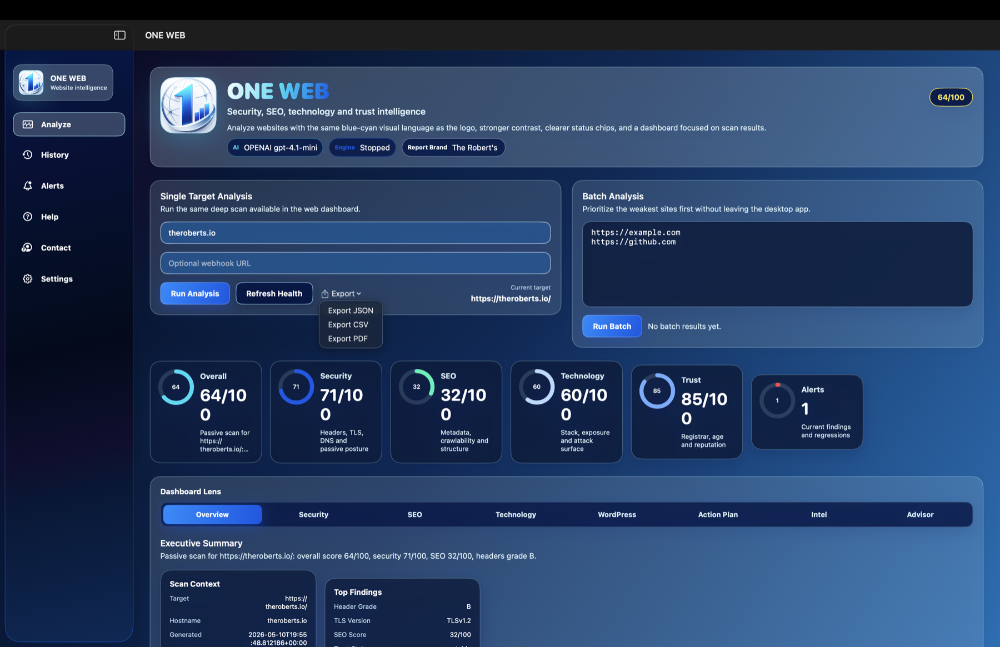

Security clarity
Review headers, TLS, DNS and attack-surface signals without jumping between scanners or raw technical reports.
Website intelligence for macOS
ONE-WEB turns technical website signals into a clear desktop dashboard, helping teams see what protects trust, what limits ranking potential, and what deserves attention next.

Why it matters
A site can rank well and still lose visitors if trust signals are weak. It can also be technically secure while hidden by SEO gaps. ONE-WEB helps you read both sides together.
Review headers, TLS, DNS and attack-surface signals without jumping between scanners or raw technical reports.
Understand page structure, metadata, crawlability and score changes that can limit search visibility.
See WHOIS, registrar, age, reputation and history context that influences confidence in a website.
Export JSON, CSV or PDF-style results so teams can turn scan output into fixes, audits and client updates.
Inside the app
How it helps
ONE-WEB is designed for owners, agencies and technical teams who need quick answers: what is weak, why it matters, and what should be fixed first.
Run single-target checks or compare multiple websites from the desktop app.
Compare security, SEO, technology, trust and alert signals in one place.
Use score changes, findings and exports to guide improvements that raise confidence and reach.
Ready for macOS
Download the macOS app and start auditing the signals that affect how people discover, evaluate and trust your website.